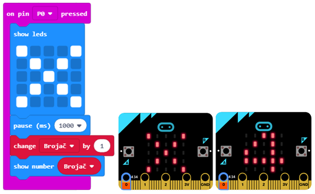
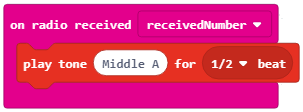
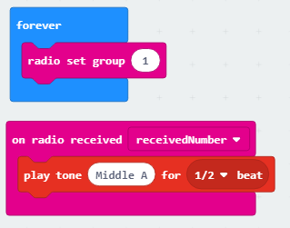

Detyrë - the Wire¶
Ne hasim çështje të aftësive motorike (koha më e ngadaltë e reagimit, ngathtësia dhe pamundësia për të kryer aktivitete të caktuara) pothuajse çdo ditë. Shumë nga punët sot kërkojnë një dorë të qëndrueshme. Për shembull, arkitektët, saldatorët, dentistët dhe kirurgët duhet të kenë një dorë “të qëndrueshme” që puna e tyre të jetë e suksesshme. Issuesështjet e aftësive motorike janë veçanërisht të theksuara kur bëhet fjalë për dorën jo-mbizotëruese.
Studimet tregojnë se 96% e popullsisë botërore përdor dorën e djathtë (janë të dorës së djathtë). Për shumicën e këtyre njerëzve, dora e majtë është plotësisht e lënë pas dore, dhe ata nuk janë në gjendje të kryejnë shumë aktivitete që kërkojnë saktësi me këtë dorë.
Një nga mënyrat për të kapërcyer këtë çështje është pajisja e quajtur Wire; me këtë pajisje, një person mund të praktikojë aftësi motorike duke marrë reagime mbi nivelin e suksesit të ekzekutimit të detyrës. Me ndihmën e kësaj pajisje, të gjithë mund të praktikojnë përqendrimin e tyre dhe aftësitë e shkëlqyera motorike. Në varësi të reagimeve, përdoruesi mund të përcaktojë nëse ai ose ajo është i shkathët, ose nëse ka disa çështje të aftësive motorike dhe kërkohet më shumë praktikë.
Për ndërtimin e pajisjes Wire, do t’ju duhet:
4 Micro:bit
Klipet e krokodilit
Tela me madhësi të ndryshme
Baza prej druri ose styrodur
Altoparlantë ose kufje
Clip (hook)
Në mënyrë që të bëjmë pajisjen Wire, së pari, duhet të bëjmë një pajisje të përbërë nga tela mbi të cilën mund të praktikojmë aftësitë tona motorike, bazën prej druri (ose ndonjë tjetër) dhe Micro:bit.

Proçedura për lidhjen e Micro:bits
Tani që jemi njohur me karakteristikat themelore dhe përbërësit e Micro:bit, ne mund të vazhdojmë me ndërtimin e pajisjes Wire. Ne duhet të lidhim Micro:bit duke përdorur kapëse krokodili në konfigurimin e përmendur më lart. Ne do të lidhim Micro:bit duke lidhur tokëzimin (GND) me tela, duke përdorur kapëse të krokodilit. Figura më poshtë tregon lidhjen midis tokëzimit dhe Micro:bit (vetëm për një pajisje).

Për më tepër, ne duhet të lidhim Micro: bit me pjesën e pajisjes që teston aftësitë motorike (goditje). Sapo të ndërtohet pajisja “Wire”, është koha për të krijuar programe për secilin Micro: bit.

Programim
Secila nga katër Micro:bit duhet të programohen individualisht:
E para zbulon dhe numëron gabimet e bëra nga përdoruesi
E dyta fillon kohën
E treta mat kohën
E katërta bën një tingull kur përdoruesi bën një gabim.
Hapi 1
Vizitoni https://makecode.microbit.org/.
Hapi 2
Krijoni një projekt të ri.
Tani, ne dëshirojmë të programojmë zbulimin e gabimeve, më saktë ne duam të zbulojmë, duke përdorur Micro:bit, kur kapësja prek telat kryesorë.
Bazuar në pajisjen fizike Wire, mund të konkludojmë se kutia P0 është “shkas” për të gjitha ngjarjet.
Meqenëse kunja P0 është e lidhur përmes klipeve të krokodilit në goditje, gabimi zbulohet duke prekur telin kryesor dhe Micro:bit duhet të shfaqë një kryq (ne po programojmë zbulimin e gabimit).
Hapi 3
Nga kategoria  zgjidh bllokun
zgjidh bllokun  dhe nga lista drop-down zgjidh pinin
dhe nga lista drop-down zgjidh pinin P0.
Ky bllok do të jetë “nxitësi” ynë për shfaqjen vizuale të gabimit.
Hapi 4
Tani, duhet të shtojmë bllokun që tregon shenjën e kryqit në ekran, i cili do të shfaqet kur përdoruesi prek tela kryesore me pin.
Zgjidhni kategorinë  dhe bllokun
dhe bllokun  .
.
Pamja e kodit dhe gabimi i simulatorit:

Në kod, ne do të shtojmë bllokun për pauzë me të cilin sigurojmë përgjigjen në kohë të sistemit (Pajisja me tela).
Zgjidh kategorinë dhe bllokun  ku mund të vendosni kohën në milisekonda (1000 milliseconds = 1 second).
ku mund të vendosni kohën në milisekonda (1000 milliseconds = 1 second).
Pamja e kodit:

Hapi 5
Pjesa e sipërme e kodit tregon vetëm zbulimin e gabimit që ndodh kur goditje prek telat kryesorë.
Tani, do të shtojmë pjesën që do të numërojë numrin e herëve që përdoruesi ka bërë një gabim. Për të përmbushur këtë kërkesë, ne duhet të gjejmë një mënyrë për të ruajtur dhe, nëse është e nevojshme, të ndryshojmë numrin e gabimeve që bën përdoruesi. Zgjidhja për këtë problem është prezantimi i variablës.
Një variabël mund të kuptohet si një hapësirë në kujtesën e kompjuterit, diçka si kuti, në të cilën, gjatë ekzekutimit të programit, ne mund të ruajmë disa vlera të përkohshme. Variablat kanë emra. Kur duam të përdorim vlerën e variablës, mjafton të përdorim emrin e saj.
Një variabël është krijuar në mënyrën e mëposhtme, në kategorinë Variable (1), klikoni në butonin Make a variable (2) dhe shkruani emrin e asaj variable në fushën (3), në rastin tonë emrin Counter. Duke klikuar butonin OK (4), ju keni krijuar një variabël (5).

Hapi 6
At the start of the “exercise”, the number on the counter will be 0. Setting the starting value (reset to the starting value) will be defined by the user pressing button A. This means that when the user presses the button on the Micro:bit the counter value will be set to zero, and the counting of the mistakes can begin.
From the category choose the block  , and from the drop-down list choose button A.
, and from the drop-down list choose button A.
Ky bllok do të jetë “nxitësi” ynë për rivendosjen e variablës Counter.
Nga kategoria Variabël tërhiqni bllokun  .
.
Ne do ta lidhim këtë bllok në bllokun e mësipërm dhe me bllokun që tregon vlerën e variablës. (Nga kategoria zgjedhim bllokun  në të cilin do të tërheqim bllokun
në të cilin do të tërheqim bllokun  nga kategoria
nga kategoria Variable, dhe e vendosim atë në hapësirë me numrin 0 të shkruar.
Në këtë mënyrë, ne krijojmë një bllok që tregon vlerën e variablës Counter.
Pjesë e kodit për rivendosjen dhe shfaqjen e variablit Counter:

Hapi 7
Ne mund të përdorim variblën Counter, vlera fillestare e të cilit është vendosur në 0, për të llogaritur gabimet. Vlera e variablës do të rritet me 1 sa herë që përdoruesi bën një gabim, ose më saktë, sa herë që goditje prek tela kryesore.
Për këtë, ne do të përdorim bllokun  nga kategoria
nga kategoria Variable.
Ne do ta tërheqim këtë bllok në pjesën e kodit në të cilin kemi zbuluar një gabim duke shfaqur shenjën X.
Pamja e kodit dhe ekzekutimi në simulator:
Hapi 8
Në hapin tonë tjetër, ne duam të përmirësojmë projektin duke shtuar tingullin sa herë që përdoruesi prek telat kryesorë.
Për këtë, ne do të duhet të bëjmë lidhjen midis dy Micro:bitëve, ose më saktë për të përdorur opsionin e komunikimit radio midis tyre. Së pari dhe më e rëndësishmja, ne duhet të krijojmë identitetin e grupit, i cili përdoret për të “krijuar” hapësirën në të cilën, në rastin tonë, të dy Micro:bit do të komunikojnë. Për të krijuar ID, ne do të përdorim bllokun  nga kategoria
nga kategoria  . Çdo numër mund të zgjidhet. Ne do të lëmë 1 si ID të grupit. Ne do ta tërheqim këtë bllok në bllok nga kategoria .
. Çdo numër mund të zgjidhet. Ne do të lëmë 1 si ID të grupit. Ne do ta tërheqim këtë bllok në bllok nga kategoria .
Pjesë e kodit,që krijon në grup komunikimi:

Për të dërguar një sinjal radio në një pajisje tjetër, e cila do të “reagojë” bazuar në atë duke lëshuar tingullin kur të bëhet një gabim, duhet të prezantojmë bllokun e mëposhtëm, në pjesën e kodit që zbulon dhe numëron gabimet.
Kod i azhornuar për zbulimin dhe numërimin e gabimeve:

Kodi i plotë për Micro:bit e parë:

Shkarkoni skedarin .hex në kompjuterin tuaj duke klikuar në butonin  ose butonin
ose butonin  . Micro:bit do të jetë gati për të filluar punën pasi të keni tërhequr skedarin mbi të.
. Micro:bit do të jetë gati për të filluar punën pasi të keni tërhequr skedarin mbi të.
Hapi 9
Hapi ynë tjetër është të krijojmë programin për Micro:bit tjetër, i cili do të kontrollojë tingullin sa herë që përdoruesi bën një gabim. Dy Micro:bitet tona duhet të komunikojnë në hapësirë me grupin e identitetit 1.
Ne tërheqim bllokun nga kategoria në bllokun nga kategoria .
Një pjesë e kodit, i cili krijon grupin e komunikimit:
Hapi tjetër është për këtë Micro:bit për të marrë informacionin (në rastin tonë një numër) në bazë të të cilit do të “reagojë” duke lëshuar një tingull. Për këtë, ne do të tërheqim bllokun e mëposhtëm nga kategoria :

Në këtë bllok, ne do të tërheqim bllokun  , i cili riprodhon tingullin, nga kategoria
, i cili riprodhon tingullin, nga kategoria  .
Nga lista drop-down e këtij blloku, ne do të zgjedhim tonin dhe kohëzgjatjen e tonit.
.
Nga lista drop-down e këtij blloku, ne do të zgjedhim tonin dhe kohëzgjatjen e tonit.

Pamja e kodit, që riprodhon tingullin:
Shënim: Për të riprodhuar tingullin, Micro:bit duhet të lidhet me folësit ose me kufjet në mënyrën e mëposhtme:

Kodi i plotë për Micro:bit, i cili aktivizon tingullin:
Në këtë mënyrë, ne kemi krijuar zbulimin, numërimin dhe tingullin e gabimeve të bëra nga përdoruesi kur preket teli kryesor.
Hapi 10
Për të krijuar pajisjen, e cila do të matë sa kohë përdoruesi ka nevojë për të përfunduar “ushtrimin” e aftësive të tij motorike, duhet të prezantojmë dy pajisje shtesë Micro:bit. Njëra do të jetë vetëm një “shkas” që fillon orën në Micro:bit tjetër.
Duke klikuar butonin A, pajisja është rivendosur dhe ekrani pastrohet. Opsioni reset ndodhet në kategorinë Advanced - Control.
Opsioni për pastrimin e ekranit është në nënkategorinë More të kategorisë .
Një pjesë e kodit:

Pastaj krijojmë hapësirën për komunikim me grupin e identitetit 50:

Pini P1 është kunja me të cilën lidhja është e lidhur përmes klipeve të krokodilit.
Kjo kunj do të përdoret si koha “shkas”. Më saktësisht, goditje që prek telin dërgon një sinjal radio, i cili fillon kohën. Për më tepër, për t’i mundësuar përdoruesit të shohë kur filloi koha, imazhi  do të shfaqet në ekranin e Micro:bit.
do të shfaqet në ekranin e Micro:bit.
Kodi i plotësuar për Micro:bit, i cili sinjalizon fillimin e kohës së matjes.

Hapi 11
Duhet të përcaktojmë dy variabel:
Variabli Time me të cilën do të matim kohën nga fillimi i “lojës”. Loja fillon pas pranimit të sinjalit nga Micro:bit i mëparshëm.
Variabli Counter e cila ka dy vlera të mundshme të vërteta dhe false - teli është prekur ose nuk është prekur.
Klikimi në butonin A rivendos pajisjen dhe vendos vlerat fillestare të variablave Time dhe Counter.
Vlerat për variablin Counter mund të gjenden në kategorinë  :
:

Hapi tjetër është krijimi i hapësirës për komunikim me grupin e identitetit 50:
Pini P1 është kunja me të cilën lidhja është e lidhur përmes klipeve të krokodilit. Kjo kunj do të përdoret si koha që jep “shkas”:

Kur përdoruesi klikon butonin B, koha e nevojshme për përdoruesin për të përfunduar “ushtrimin” do të shfaqet:

Kur Micro:bit pranon sinjalin e radios (numrin) nga pajisja tjetër Micro:bit, ora fillon dhe vlera e variablit Koha ndryshon me 1, pas çdo sekondi deri në fund të “ushtrimit”:

Kodi i kompletur për Micro:bit, i cili mat kohën nga fillimi i “lojës”:

Kur të keni transferuar të gjitha këto kode në Micro:bit tuaj, do të jeni gati të “testoni” aftësitë tuaja motorike dhe të filloni të “ushtroni” dorën tuaj më të dobët.